📖 Nội dung bên dưới là bản gốc tiếng Anh (chưa dịch). Ảnh đã cache offline.
Gestures
Basic Gestures
Move around your canvas, undo/redo, clear, copy, paste, and find useful menus at your fingertips.
Touch to Paint / Smudge / Erase
Tap on the Paint, Smudge, or Erase tool, then touch your canvas to begin.
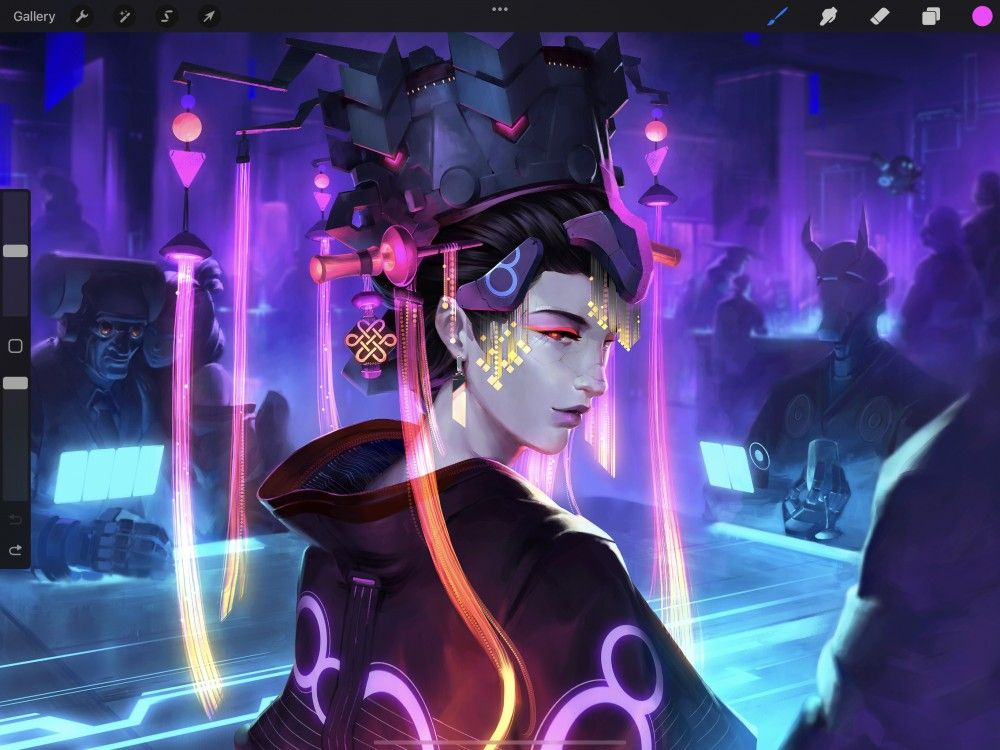

While the Apple Pencil works best with Procreate, you don’t need one to start creating. You can paint on the canvas with your fingertip.
Pro Tip
If you use Apple Pencil with Procreate, you don’t need to paint with your finger anymore. Instead, you can set a one-finger tap to bring up QuickMenu . as a handy shortcut. Change this and other multi-touch shortcuts in Gesture Controls .
Pinch to Zoom
Use a pinch to zoom in and out of your artwork to move from fine details to the big picture.
Place your fingers on the canvas and pinch your fingers together to zoom out. Pinch your fingers apart to zoom in.
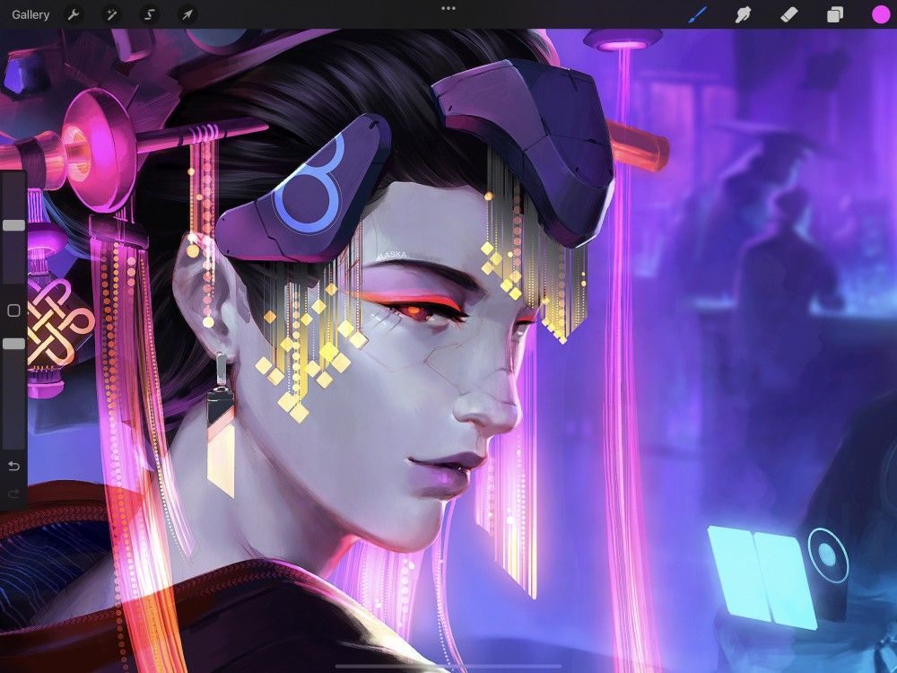

Pinch-Twist to Rotate
Pinch and Twist to rotate your canvas to an angle that works for you.
While pinching the canvas, twist your fingers in a circular motion to rotate your canvas.
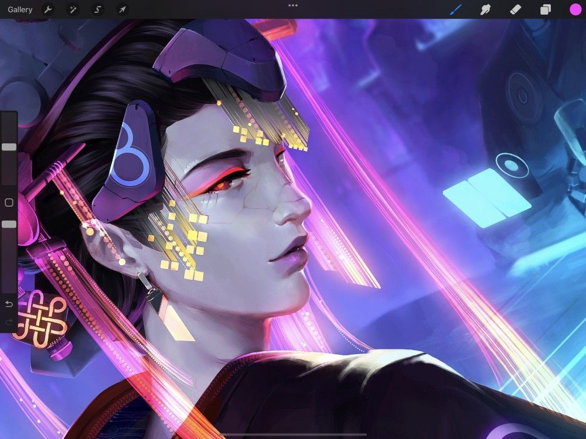
Quick Pinch to Fit to Screen
Fit your canvas to the screen by using a quick pinching motion.
Quick-Pinch is the same gesture as Pinch to Zoom, but performed much faster. When using Quick-Pinch, your canvas will pop to full size in the interface.
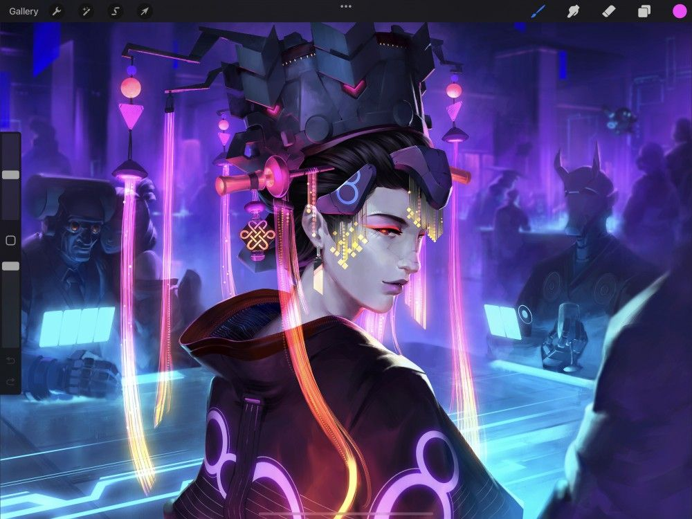

For the best results, Quick-Pinch then lift your fingers from the screen at the end of the gesture.
To return to the exact view you had before your Quick-Pinch, do the Quick-Pinch gesture in reverse.
Two-finger Tap to Undo
Quickly undo one or more of your recent actions.
To undo your previous action, tap the canvas with two fingers. Your fingers can be together or apart. A notification will appear at the top of the interface to let you know which action your undo affected.
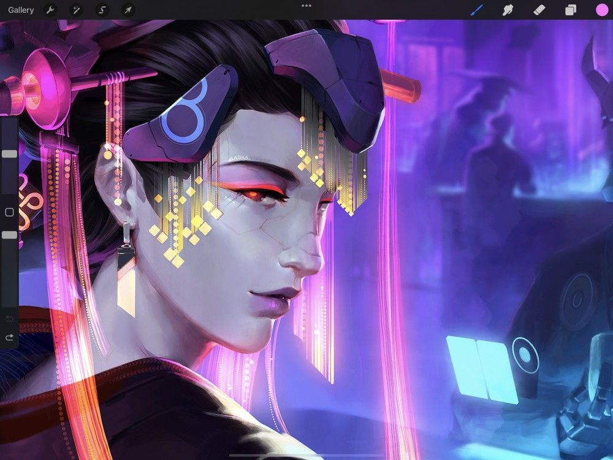

To undo a series of actions, tap and hold two fingers on the canvas. After a moment, Procreate will rapidly step back through your most recent changes. To stop, lift your fingers off the canvas again.
Procreate can undo up to 250 actions.
Heads Up
If you return to the Gallery or exit Procreate, all Undo states clear. This behaves like a save, and your changes become permanent.
Go to Actions → Prefs and adjust the Rapid Undo Delay slider to adjust the length of the delay before rapid Undo begins.
Three-finger Tap to Redo
Redo lets you undo a step with a three-finger touch.
To redo any action you have undone, tap the canvas with three fingers. Your fingers can be together or apart.
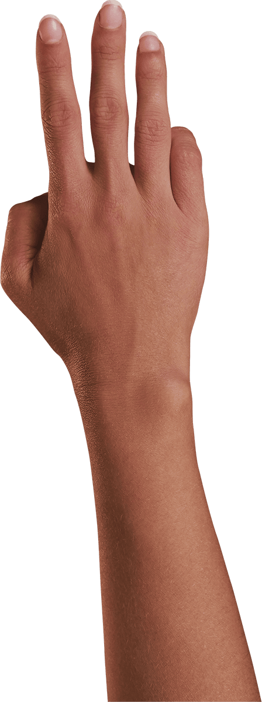
Rapidly redo a series of actions by holding three fingers on your canvas.
Three-finger Scrub to Clear
Clear a layer in an instant.
‘Scrub out’ the layer contents by moving three fingers side to side in a scrubbing motion.
Three-finger Swipe to Cut/Copy/Paste
Invoke a floating menu with all the Cut, Copy and Paste options you need.
Swipe three fingers down the screen to call up the Copy & Paste menu. This menu has buttons for Cut, Copy, Copy All, Duplicate, Cut & Paste, and Paste.
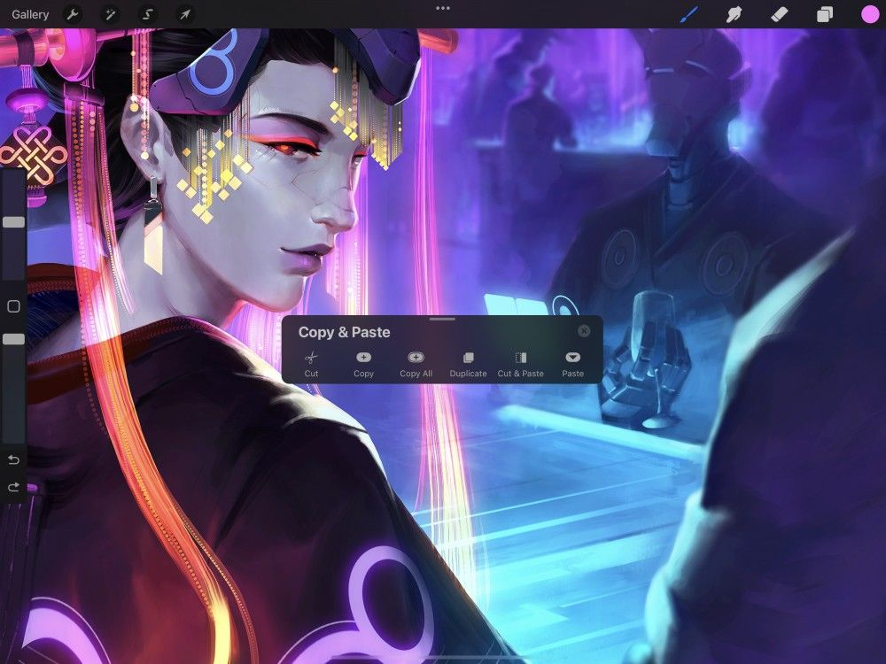
Learn more about the Copy Paste Menu .
Four-finger Tap for Full Screen
Work on your art with one brush and zero distractions.
When you want focus on your work without any interface, tap four fingers on the screen. This invokes Full Screen mode, where the interface slides away giving you a clean view of your canvas.
To bring the interface back, four-finger tap again, or tap the Full Screen indicator in the top left corner.
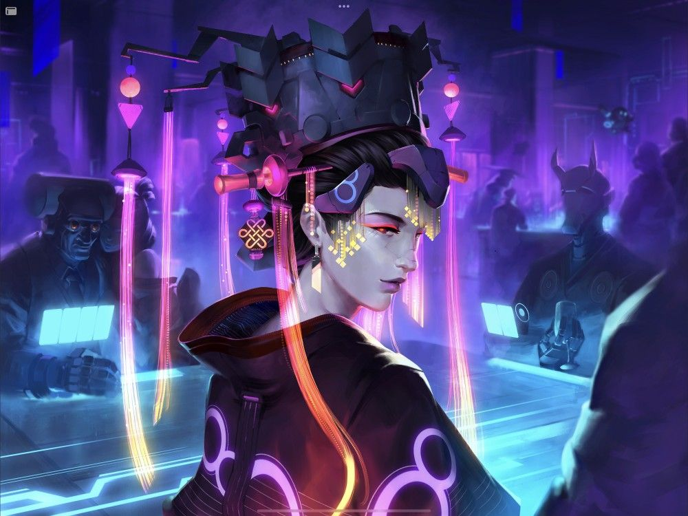
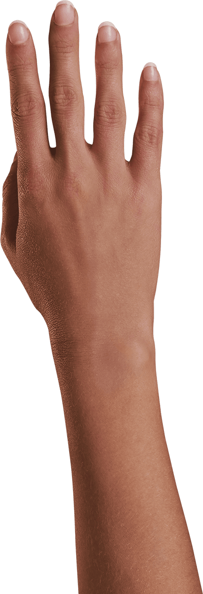
Draw and Hold for QuickShape
Draw a shape or line and let QuickShape 'snap' it to perfection.
Draw a line or shape, then keep your finger or Apple Pencil held on the canvas after you’re done. Your stroke will snap into a straight line or the closest detected shape.
While holding your finger down, tap with a second finger to snap to the perfect version of that shape.
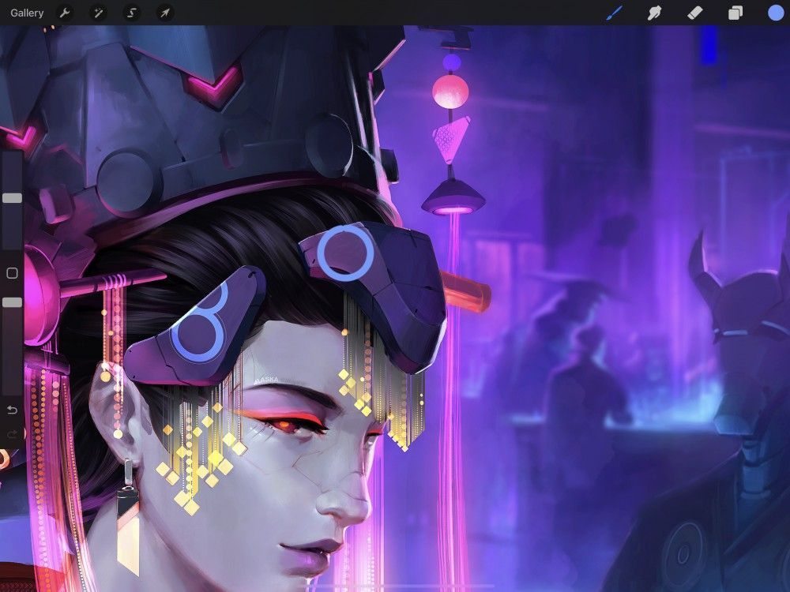
Learn more about QuickShape .
Precise Slider Control
Simple, accurate sliders provide pinpoint control.
Every slider in Procreate can set for more precise control. Grab the slider, move your finger away from the sidebar, then drag up and down. This allows the slider to adjust in smaller increments. The further away from the slider your finger gets, the finer the control.
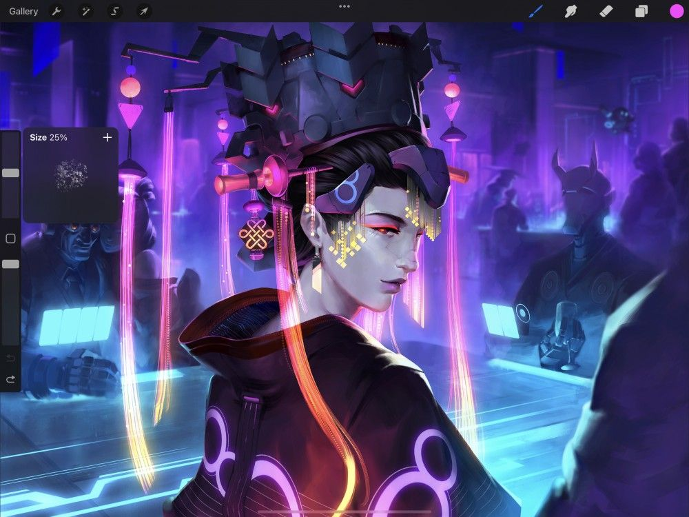
Accessibility Gestures
Procreate has single touch gestures to aid with navigating the canvas. This can be helpful for those with limited hand mobility or functionality.
Activating Single Touch Gestures
Procreate supports single touch gestures via the Single Touch Gestures Companion. This window floats above your canvas and contains Undo, Redo, Zoom, Move and Fit Canvas buttons.
To access the Single Touch Gestures Companion go to your global iPadOS Settings → Procreate and toggle Single Touch Gestures Companion on.
The Single Touch Gestures Companion will always be on-screen when you are using a canvas until it is toggled off.
By default Procreate requires a two finger tap to Undo. The Single Touch Gestures Companion reduces this to a single finger tap on the Undo button.
By default Procreate requires a three finger tap to Redo. The Single Touch Gestures Companion reduces this to a single finger tap on the Redo button.
By default Procreate requires a two finger pinch motion to zoom, and a two finger pinch twist to rotate your canvas. The Single Touch Gestures Companion reduces these to single finger motions that are activated by tapping the Zoom button.
When activated the Zoom button will change from white to blue. Find out how single touch zoom works below.
By default Procreate requires a two finger tap and drag motion to move the canvas around the screen. The Single Touch Gestures Companion reduces this to a single finger motion that is activated by tapping the Move button.
When activated the Move button will change from white to blue.
By default Procreate requires a quick pinch motion to fit to canvas. The Single Touch Gestures Companion reduces this to a single finger tap on the Fit Canvas button.
Single Touch Zoom
Zooming your canvas
With Zoom activated you will notice a blue line radiating from the center of the canvas to your finger when you tap, hold and drag. This line indicates the amount of zooming in and out.
To zoom in tap and drag away on the canvas. The longer the blue radial line the more you are zoomed in.
To zoom out tap and drag into the center on the canvas. The shorter the blue radial line the more you are zoomed out.
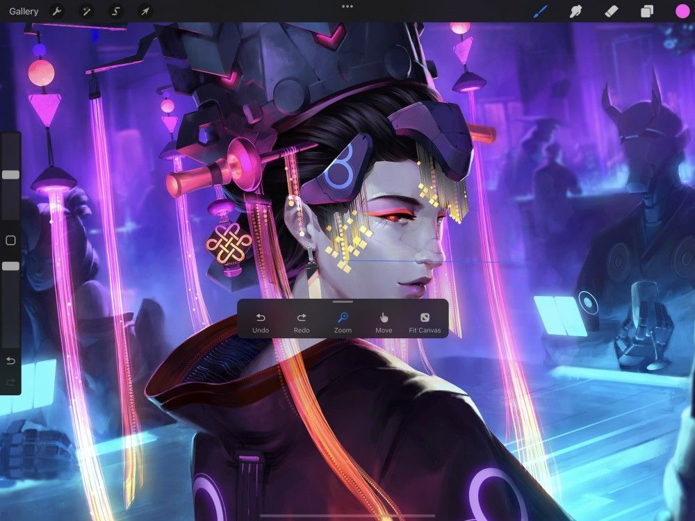
For finer zoom control, tap towards the edge of your screen before the drag motion. The further away from the center of the screen you are when you first tap, hold and drag the more control you will have over your zoom.
To deactivate, tap the Zoom button and it will change from blue to white.
Rotating your canvas
With Zoom activated, tap and drag on the edge of your canvas to invoke the blue zoom line. Now rotate the line with your finger and your canvas will rotate in that direction.
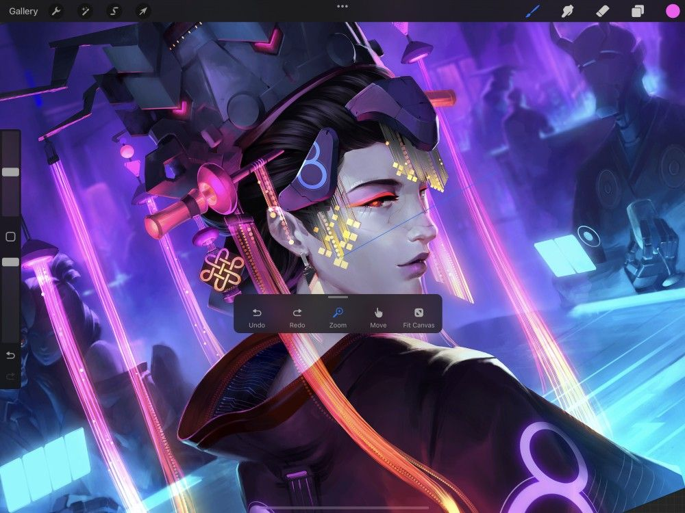
For finer rotate control, tap towards the edge of your screen before the drag motion. The further away from the center of the screen you are when you first tap, hold and drag the more control you will have over your rotation.
To deactivate, tap the Zoom button and it will change from blue to white.
Heads Up
Activating Zoom will prevent you from using Paint, Smudge or Erase with your finger. Turn Zoom off to reinstate these functions.
Single Touch Move
Moving your canvas
To move your canvas around the screen, tap and drag on the canvas.
To deactivate, tap the Move button and it will change from blue to white.
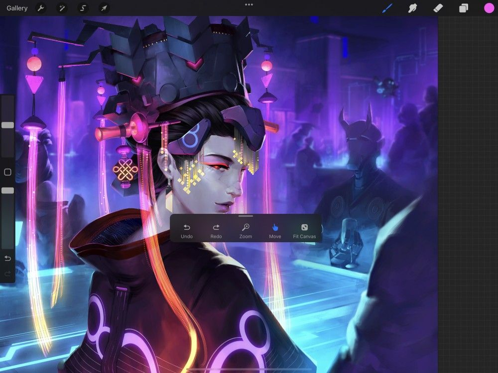
Heads Up
Turning Move on will prevent you from using Paint, Smudge or Erase with your finger. Toggle Canvas Move off to reinstate these functions.
Hover Gestures
Procreate supports Apple Pencil hover, with handy brush size and opacity gestures to keep you in the flow.
To activate these gestures, go to Actions > Gesture controls > Hover and switch on the toggle.
Pinch to alter brush size
Control the brush size by using a pinch gesture similar to Pinch to Zoom. While hovering the tip of your Apple Pencil just above the canvas, pinch inwards to decrease brush size and pinch outwards to increase brush size.
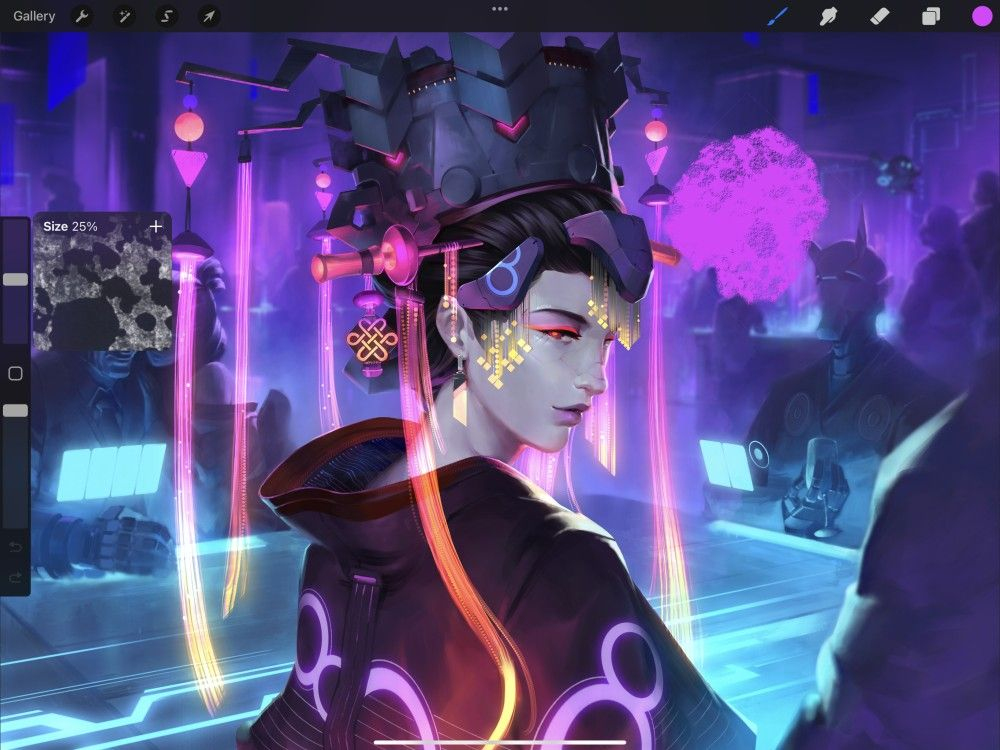
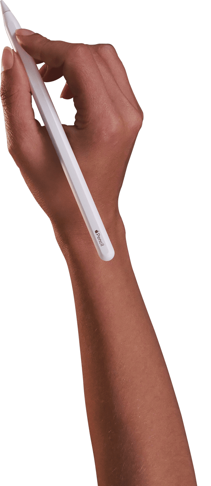
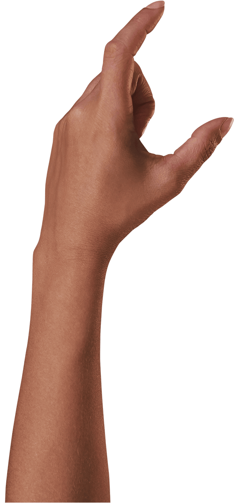
Pro Tip
With Actions → Prefs → Brush Cursor toggled on, use this gesture to match the size of extant strokes on the canvas.
Slide to alter brush opacity
Control the amount of brush opacity by using a finger slide gesture. While hovering the tip of your Apple Pencil just above the canvas, slide left and right to decrease and increase brush opacity. Alternatively you can also decrease and increase brush opacity by sliding down and up with your finger while using hover.
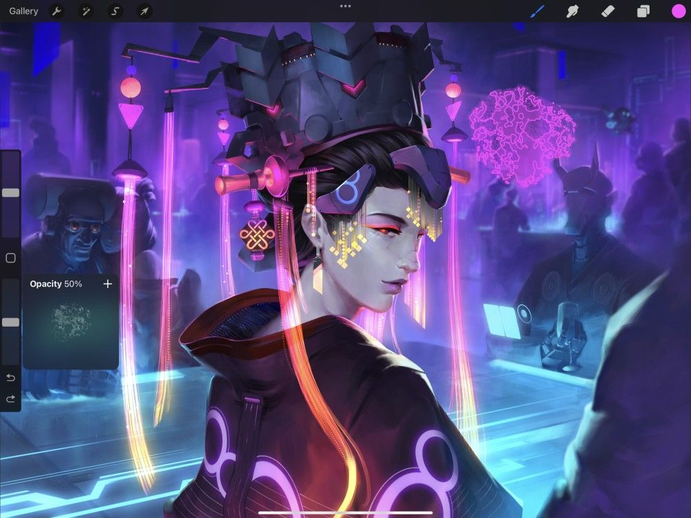

Pro Tip
With Actions → Prefs → Brush Cursor toggled on, use this gesture to match the opacity of extant strokes on the canvas.
Heads Up
Hover requires iPadOS 16.1 or newer running on iPad Pro 12.9-in. (6th generation) or iPad Pro 11-in. (4th generation) while using Apple Pencil 2nd generation.
Layer Gestures
Work faster and more efficiently in the Layers panel using these simple gestures.
Pinch to Merge
Combine two or more layers into one.
On the Layers pinch two layers together to merge those layers. Any layers between them will also merge into a single combined layer.
Learn more about Merge .
Tap to select Primary Layer
Select a Primary layer.
On the Layers panel, tap any layer to make it active. This layer will change color to bright blue, and is now your Primary.
You can only have one Primary layer at a time. Any drawing or painting you do will affect this Primary layer.
Learn more about Primary and Secondary layers .
Swipe Right to select Secondary Layer
Select a Secondary layer.
On the Layers panel, swipe right on any layer to add it to your selection as a Secondary layer. Secondary layers appear as dark blue.
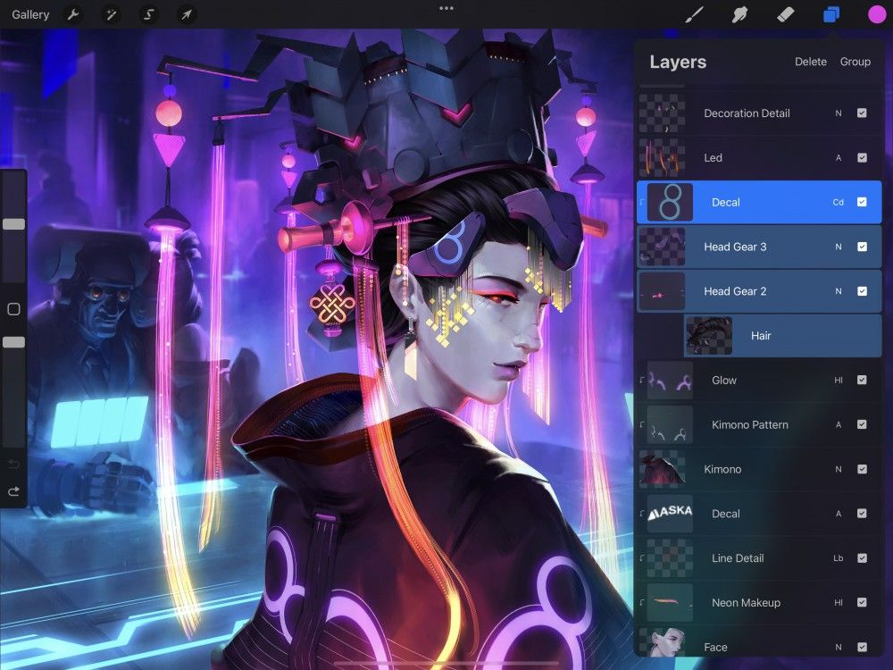
You can only have one Primary layer at a time, but you can select as many Secondary layers as you like. Drawing and painting will still only appear on your Primary layer.
Learn more about Primary and Secondary layers .
Two-finger Tap for Layer Opacity
Adjust the transparency of a layer or selection.
On the Layers panel, two-finger tap a layer to make it Primary and bring up the opacity controls. Drag left and right on your canvas to decrease or increase the transparency of this layer.
If you make a selection and then two-finger tap the layer to alter opacity, the change occurs only within the selected area.
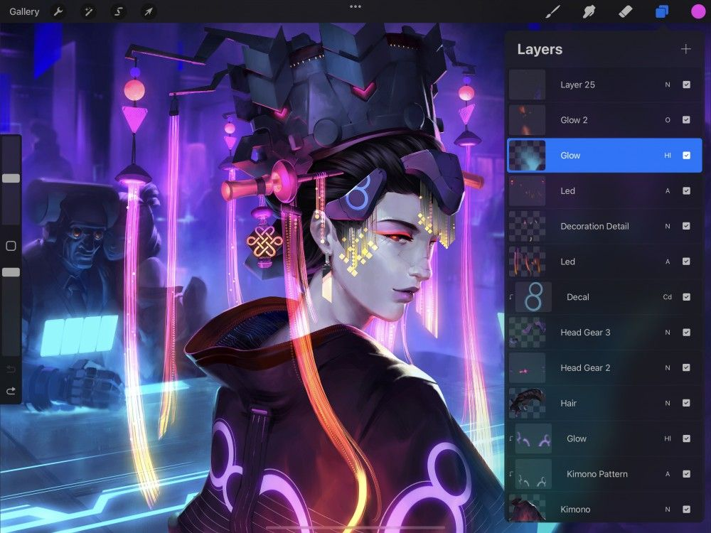
Learn more about layer opacity in Layer Blend Modes .
Two-finger Swipe Right for Alpha Lock
Lock the content and transparency of a layer.
On the Layers panel, swipe a layer from left to right with two fingers to lock that layer’s transparency.
Any further drawing or painting will only affect the existing artwork on that layer. Any transparent area will behave like a mask and remain untouched.
Alpha Lock lets you texture, detail, or shading elements of your artwork without painting outside the lines.
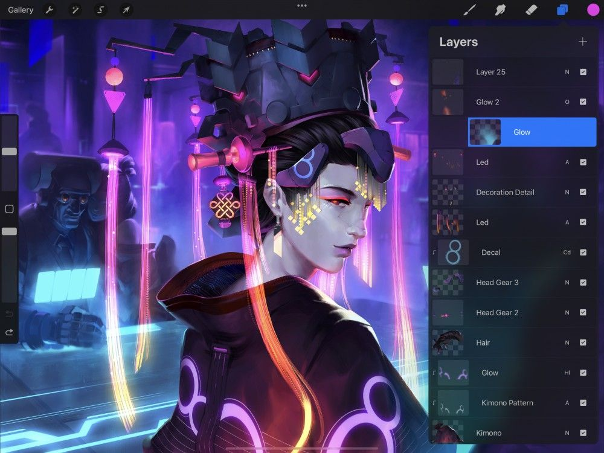
Learn more about Alpha Lock .
Two-finger Hold to Select Layer Contents
Select the contents of a layer.
On the Layers panel, two-finger tap and hold layer to select the contents of that layer.
This will select only the parts where you have drawn, painted, or pasted images. Transparent parts of the layer won't be selected.
You can make all sorts of actions on the selected area. Paint it, transform it, copy it, feather or clear it, and much more.
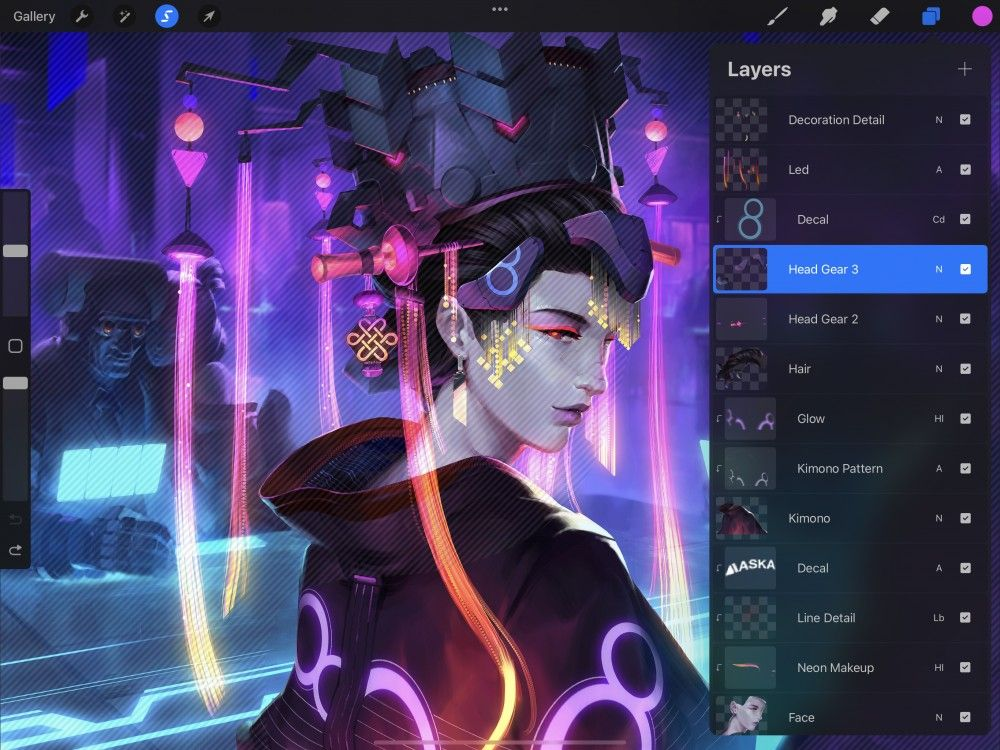
Learn more about Layer Selections .
Customize Gestures
Create your own shortcuts and tweak your Gestures to suit your workflow.
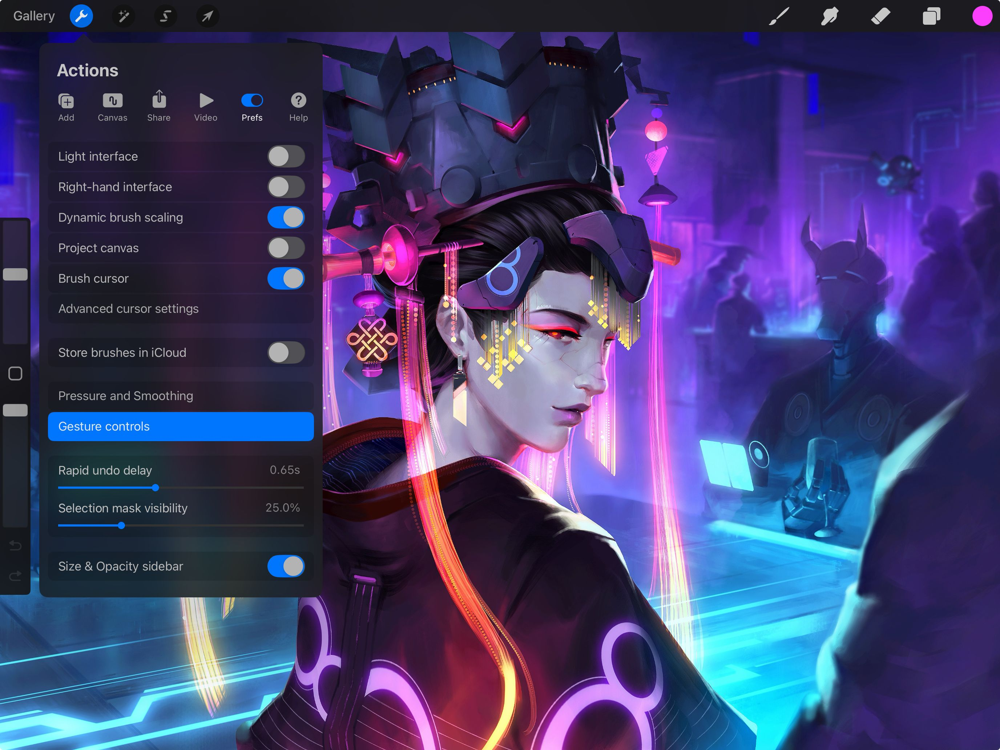
The Gesture Controls panel gives you the ability to modify shortcuts for a variety of tools throughout Procreate.
Tap Actions → Prefs → Gesture Controls to open the Gesture Controls panel.
Most shortcuts toggled on or off. You can set up multiple shortcuts for the same function, or deactivate shortcuts from functions you rarely use. Shortcuts that trigger by touch-and-hold can use a slider to set the delay before it triggers.
You cannot assign the same shortcut to two different features. If activating a shortcut causes a conflict with another shortcut, a yellow warning icon will flash up next to the conflicting feature.
Learn more about Gesture Controls .
Still have questions?
If you didn't find what you're looking for, explore our video resources on YouTube or contact us directly. We’re always happy to help.